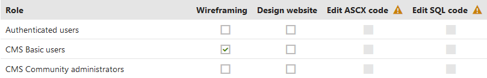

Special security permissions
The purpose of special permissions in Kentico is to prevent privilege escalation attacks. In this type of attack, a lower privilege user can gain access to functions only available for higher privilege user. For example, editors with permissions to edit only content elevate themselves to the global administrator level.
The special permissions cover the following areas:
Only the users with the Global administrator privilege level can configure these settings.
Editors and other users cannot grant or remove these special permissions. Even if you assign users to a role which is allowed to modify permissions, these special permissions will be disabled, which is indicated by a warning icon ( ).
).

Special permissions which can be granted only by global administrators
ASCX code in layouts
The Edit ASCX code permission for the Design module allows users to edit ASPX/ASCX code of page layouts, transformations and form layouts.
When you grant the Edit ASCX code permission to a certain role, then users in that role can edit such code and run any inline code within the layout – for example, code that elevates privileges. Without the permission, users cannot do this.
SQL code in web part properties
The Edit SQL code permission for the Design module allows users to edit the WHERE condition, ORDER BY and Columns properties of web parts with a data source (for example various repeaters). If you grant this permission to a role, users in that role can write SQL statements into the given properties without any restrictions.
Without the Edit SQL code permission, users can only write the following types of SQL syntax:
|
WHERE conditions |
ORDER BY expressions |
Columns expressions |
For example: UserID = 1 |
For example: UserID |
For example: UserID, UserName |
Securing SQL properties of custom web parts
You also need to consider privilege escalation vulnerabilities when developing custom web parts with properties that allow users to input SQL code (Where conditions, Order by clauses or lists of Columns). To avoid the problem, assign one of the following predefined form controls to the fields representing the given web part properties (instead of using a standard text box):
Where condition
Order by
Columns
The form controls prevent privilege escalation by providing the restrictions described above for the SQL properties of the default Kentico web parts. Only users with the Global administrator privilege level or the Edit SQL code permission for the Design module can edit the SQL code without restrictions.
For more information about defining web part properties, see: Working with web part properties
Protecting web part properties against SQL injection
The SQL properties of the default web parts also have a security mechanism that protects against SQL injection attacks via macros. To learn how to provide this protection for custom web part properties, see Macros and security - SQL injections.
SQL code in reports
When working with the Reporting application, users need to write SQL statements to get data from the database and display it in various reporting tools. This could also be dangerous because a user use SQL code to elevate privileges or get sensitive data from the database.
The Edit SQL Queries permission for the Reporting module indicates whether a given role can edit SQL queries in reports.
Alternatively, you can change the connection string for reports. With that, you can create a special user account on the database level with limited permissions. For example, the database user will not be able to execute any UPDATE/INSERT/DELETE queries.
Another approach could be to separate the data into multiple databases. The first database would contain only reporting data, and the second database all other data including users. Then, the reporting module would be able to work only with the reporting data (and the user would not be able to execute malicious queries). Of course, in this scenario, you need to prepare a mechanism that ensures data synchronization.
Configuring multiple connection strings
Edit your web.config file and specify a new connection string in the <connectionStrings> section. The name attribute must be unique.
Go to Settings -> Security & Membership.
Select the new connection string as the Default report connection string in the Reporting category.
Open the Permissions application and configure the Set connection string permission of the Reporting module.
Only users in a role with the permission and global administrators can change the connection string used by reports.
SQL code in form fields
When defining the fields of Forms, certain types of fields (Form controls) offer the possibility to load a list of options using an SQL query. Users are only allowed to write the code of these queries if they have the Global administrator privilege level or belong to a role with the Edit SQL Queries permission for the Forms module.
SQL code in the advanced export dialog
When performing an Advanced export of data from a listing page in the administration interface, users with sufficient privileges have the option to modify the exported data using an SQL Where condition or Order by clause.
Writing SQL code in the advanced export dialog is only available for users who have the Global administrator privilege level or belong to a role that has the Edit SQL code permission for the Design module.
Allowing code editing for site administrators
You can choose whether users with the Administrator privilege level are allowed to edit SQL and ASCX code by default, or if they need to have a role with the permissions mentioned on this page.
Open the Settings application.
Select the Security & Membership category.
In the Administration section, set the Enable code editing for site administrators option.
Click Save.
Conclusion
From a security standpoint, the best practice is to:
NOT grant any of the permissions listed on this page to any roles
Not allow site administrators to edit code
If you do not follow this recommendation, you risk privilege escalation.